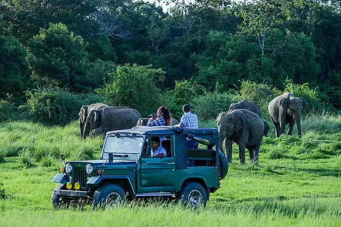

Safari tourists. Two visitors here in a National Wildlife Park in Sri Lanka. Camping fire cozy closeup view. Outdoor wildlife lifestyle cooking delicious meal

Sri Lankan leopard, Panthera pardus kotiya, Big spotted cat going across the road, Yala national park, Sri Lanka, Asia. Highest leopard concentration in the world
Camping with fire at night. Camping experience in Sri Lanka. Four visitors enjoying camping holiday in beachside

Car safari in Udawalawa national park. Asian elephants in Sri Lanka